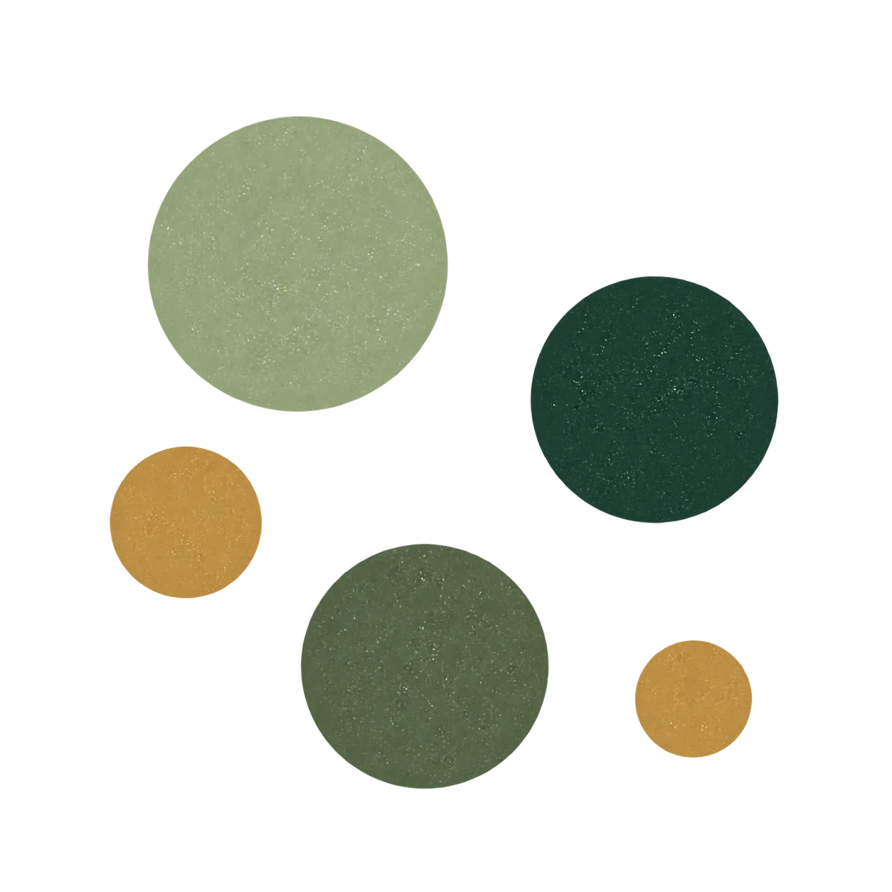
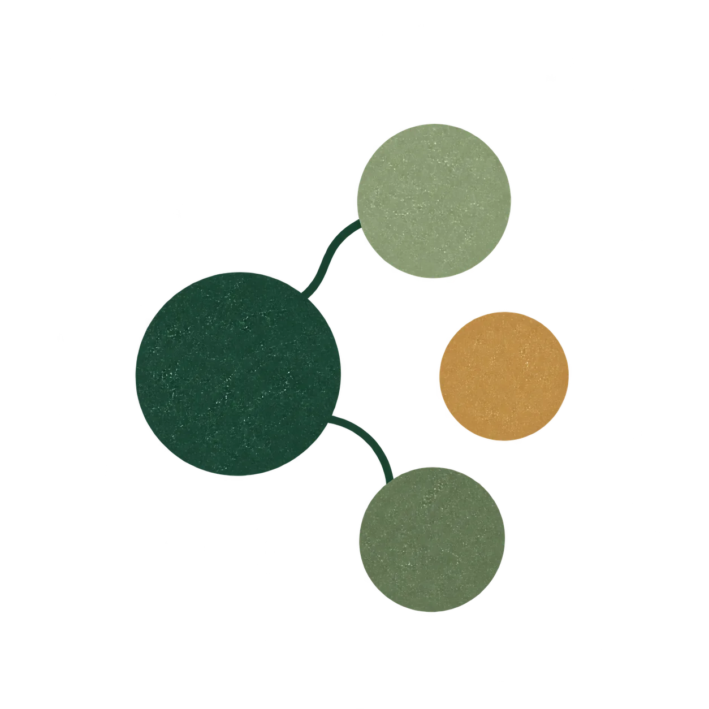

For owners and operations leads, especially in food, beverage and manufacturing.
Find the opportunity.
Make it work.
That could mean spotting unmet needs among existing customers, improving the handoffs that slow work down, or finding a practical use for AI.
I help you understand what’s worthwhile and put the right improvement into practice.
Project work or ongoing part-time support.
The person you work with
Hi, I’m Jonah.
My career has centred on production: theatre, manufacturing and food production. I’ve organised teams and schedules, developed products and introduced processes and automation.
I work directly with owners and their teams to make opportunities understandable, investigate what’s worth pursuing, and put practical improvements in place. Sometimes that’s a better process, sometimes a new way of using existing tools, and sometimes something worth building.
How I work
From opportunity to practical improvement.
I start by understanding what matters to your business and looking at real examples. Not every promising idea deserves a project, and not every problem needs a new tool. For operations and systems work, I use four practical steps.

01 / SignalSee what’s happening.
Look for recurring problems, missed opportunities, and information that isn’t being put to good use.

02 / ImpactUnderstand what it affects.
Consider the effect on customers, time, cost, capacity and potential growth.
 03 / Priority
03 / PriorityChoose what matters.
Decide which opportunities or problems are worth addressing and what can wait.
 04 / System
04 / SystemPut the change to work.
Test the simplest useful improvement, establish who owns it, and review the results.
Let’s talk
What would you like help with?
Tell me what you’re trying to achieve, where work keeps getting stuck, or what opportunity you’d like to explore. We’ll discuss whether there’s a useful next step.